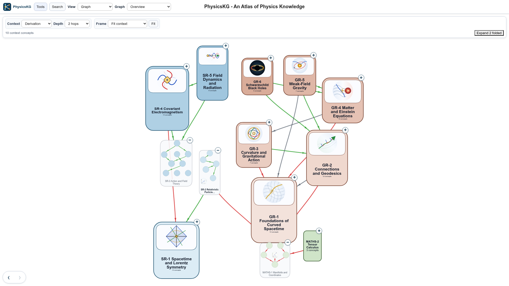
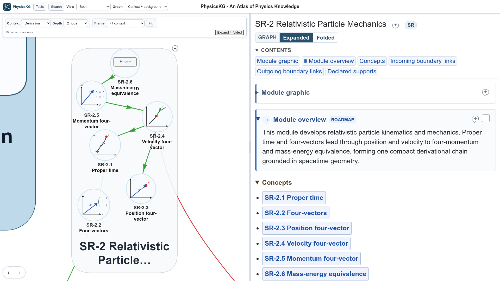
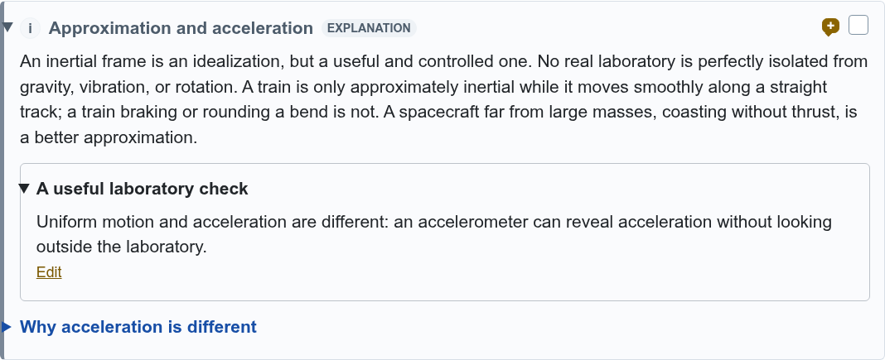
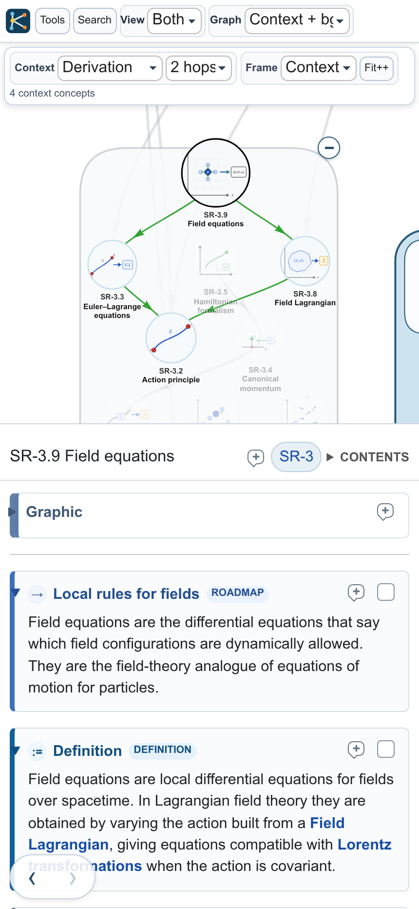

PhysicsKG user guide
PhysicsKG is an atlas of connected physics concepts. Use it to read about an idea, trace its foundations, see where it is used, and practise applying it. Modules group concepts into manageable topics, helping you see the overall structure before opening the detail. The current collection covers Special Relativity, General Relativity and supporting mathematics.
Open PhysicsKG and explore without creating an account. Notes, reading marks and question progress are saved in your browser. Google Drive synchronisation is optional.
For a demonstration, choose Start guided tutorial in Quick Start. This guide is a reference you can return to while using the viewer.
1. Start with modules
The graph initially shows folded modules. Each box represents a topic and shows its title, illustration where available, and concept count. Lines between modules summarise relationships between their concepts.
Select a module to read its overview in Details. Open its concept list to see what it contains. The + at the module's upper-right corner expands it in the graph; − folds it again. Expansion preserves the selection, so the module overview can remain open while you inspect its concepts.


Selecting a concept opens its explanation. Its title includes a code, such as SR-2.6, and a link to its module. Use Search for a title, code or phrase; results include modules, concepts and matches in their text.
One concept or module is always selected. Clicking empty space retains it. The floating ‹ › buttons retrace your selections, while Next below a concept follows the reading sequence through SR, MATHS and GR.
2. Choose your view
View chooses Graph, Details or Both. Use Graph for exploring connections, Details for uninterrupted reading, and Both when following an explanation alongside its relationships. On phones, Both places the graph above Details. In Graph-only view, the selection name appears beside the context status; tap it to open Details.
Graph controls how much of the map is shown and emphasised:
| Graph setting | What you see |
|---|---|
| Overview | The whole map, with internal concept edges and module-to-module summaries, whether modules are folded or expanded. |
| Context + background | The selected context stands out; surrounding material is subdued. |
| Context only | Just the selection and its context. |
Start with Context + background for orientation. Context only is useful for a tidy view of a particular argument. Selecting something does not change Graph mode automatically.
These controls have separate jobs. Selection chooses what you study; Context chooses its relevant connections; Graph chooses their surroundings; module folding chooses how concepts are represented. Panning and zooming change the camera, the part of the displayed map currently on screen.
3. Choose the relationships
Context asks a question about your selection:
| Context | Use it to find |
|---|---|
| Prerequisites | Essential prior knowledge: what the selection requires. |
| Derivation | Ideas it is derived from or constructed from. |
| Foundations | Prerequisites, derivation and construction together. |
| Uses | Ideas that require, derive from or are constructed from it. |
| Connections | All relationships in either direction. |
| Related | Associations without a prerequisite direction. |
| Custom… | Your own combination of relationships and directions. |
Depth chooses one hop, two hops, three hops or Transitive, which follows the complete reachable chain. Begin with one hop to inspect a few immediate connections; increase the depth to understand a longer argument. For a module, context starts from all its member concepts.
Read a directed edge as a statement: “A requires B” points from A to B. Following Foundations therefore works towards prior ideas, whereas Uses follows the opposite direction. Tools → Edge key explains the relationship types and colours. Inspect an edge for its particular dependency explanation.
In the two whole-map Graph modes, Context also filters which relationship types are drawn throughout the map. Direction and Depth determine the selected context, rather than restricting every background edge. For example, use Custom with just Requires to inspect prerequisite relationships across the whole map.
4. Follow an argument
Suppose you want to understand where mass–energy equivalence comes from.
- Search for Mass-energy equivalence and select SR-2.6.
- Read its explanation, then open Derived from in Details. The entries give the contributing concepts and explain what each contributes.
- Check Full tree to follow the chain beyond immediate inputs.
- Press Show in graph. This sets Derivation context and the corresponding depth, reveals the graph if necessary, and fits the context.
- Choose Context only to remove the background. Use the offered expansion action to reveal concepts represented by folded modules, then Fit again.
Follow links in Details or select graph concepts to read each part of the argument. Where this is used provides the reverse journey; its Show in graph action sets Uses context.
Derived from lists relationships between concepts. An authored Derivation block presents reasoning within an explanation. Both can help you understand an argument, but they serve different purposes. The graph records the authored relationships; the accompanying prose explains their physical significance.
5. Frame and arrange the graph
Drag empty graph space to pan, and pinch or use the wheel to zoom. Changing the camera does not change which concepts belong to the context. Selection pans only enough to reveal an off-screen object, so another Fit may be helpful.
Frame chooses the target of Fit:
- Reveal selection: pan only if needed to bring it into view.
- Selection: frame the selected object.
- Context: frame the represented context.
- All: frame the displayed graph, which depends on Graph mode.
After fitting Context, the button becomes Fit++. Press it to bring context nodes closer together along their connections. The selection stays fixed while the arrangement contracts around it. You can then drag context nodes for a clearer arrangement, perhaps for a presentation or screenshot. This works in any Graph mode; background nodes stay in place.
Fit++ arrangements are temporary. Changing the selection, context, Graph mode or module representation restores the underlying layout.
For lasting adjustments, enable Tools → Layouts → Edit personal layout and move nodes. These positions are saved as personal data. Reset to published layout restores the supplied arrangement. Panning and zooming never edit node positions. While Fit++ is active, dragging adjusts its temporary arrangement.
6. Read, clarify and add notes
Details contain titled blocks: definitions, explanations, examples, derivations, historical notes and other material. Open or close individual blocks, use Unfold all/Fold all for the concept’s top-level blocks, and use CONTENTS to jump between them. These bulk controls leave nested clarifications, reading trees and question answers alone. Graphics start open, showing their image and caption. Pinch or Ctrl/Cmd-wheel over Details to enlarge its text and graphics independently of the graph.
A nested explanation offers extra clarification or algebra. Its folded title is compact; opening it reveals the additional text inside a thin border.
Add your own content using a speech-bubble +. In a block heading, press the bubble and choose a paragraph; the note appears below it. The bubble beside a concept or module title adds a top-level personal block. Graphics and Study Questions have one block-level note position. A filled bubble indicates existing notes and still lets you add another.
Notes open for reading. Choose Edit to change one and Done to return to reading; changes save locally as you type. Personal content uses brown accents. You can fold it like built-in content. Tools → Notes lists your notes and offers import, export and confirmed deletion of all notes, including those whose original targets can no longer be found.
For mathematics, type \(x^2\) inline or \[E=mc^2\] on a separate line. Insert maths adds an example formula to edit. Type single backslashes as shown; no additional escaping is needed in the editor.

7. Track reading and practise
Open a built-in block before marking it read with the blue checkbox in its heading. The tick remains visible when folded, and you can untick it at any time. An unread folded block has a disabled checkbox. A concept earns a blue title tick when all its blocks are read. A module earns one when its own blocks and those of every member concept are read. Personal notes do not affect this.
Open Study Questions to practise. Choose an answer and press Check answer; all current questions offer alternatives and mark automatically, including calculations. Choose I don't know to reveal the worked answer without guessing. The feedback explains the result.
Press an Incorrect badge to try again with the answer hidden. Another submission replaces the latest result; attempt counts and earlier answers are not retained. You can fold answered questions to keep the page tidy.
Tools → Study summarises progress and lists attempted questions. A green concept tick means all its questions are currently correct; module ticks cover the questions across its member concepts. Blue and green graph ticks show the same completion states. One Study option hides both types of graph tick.
8. Keep work across devices
Your personal data comprises notes, personal layouts, reading ticks and latest study-question results. It stays in this browser unless you export or synchronise it. Another browser or device starts with its own local data. Typed free-text question responses are not retained as part of the saved study record.
Under Tools → Personal data, Export personal data downloads a ZIP of readable CSV files. Import it elsewhere and choose Merge to combine work or Replace to restore the exported snapshot. Export before replacing data you may want to keep, and before clearing browser storage.
For automatic synchronisation, choose Connect Google Drive and authorise your Google account. PhysicsKG uses a visible personal-data ZIP in your Drive. Connect the same account in each browser or device. Connection performs a sync; subsequent personal changes synchronise automatically while connected. Check the last successful sync time, or use Sync now before changing devices.
If authorisation expires, Sync paused opens the connection controls. Reconnect restores synchronisation. Disconnect dismisses the notice and lets you continue offline; local work remains available and merges when you reconnect. Export/import is also available without a Google connection.
9. Tutorials, links and common puzzles
Hover over a text reference, or tap it on a phone, to inspect its source without leaving your reading. A reference can point to a whole concept or a particular block. Block previews offer Read full block; Go to block opens that block in its owning concept or module. Close the preview to carry on where you were.
Under Tools → Tutorials, choose a route and press Start, then Next step. PhysicsKG operates the controls during guided playback. You can scroll and zoom Details, select text, use Contents and open clarifications. Other navigation, hover previews and study actions stay locked. Explore from here hides the tutorial card and hands control to you; Continue with tutorial restores the tutorial checkpoint while retaining your notes and study activity. Exit returns to ordinary browsing. Each introduction provides a direct tutorial link.
The browser address identifies the selected concept or module. Copy that address to share a starting point; it does not transfer your personal data or complete view configuration. The URL's concept/module identifier is stable even if a display number changes. Automated assistants can use these links and the same named controls described here.
If the view is confusing, check these common cases:
- A concept is inside a folded module: it is still selected. Expand that module to see the concept separately.
- A context is too small or too large: check its relationship rule and Depth, then use Frame Context and Fit.
- Other material remains visible: choose Context only to remove background.
- Nodes will not move: ordinary browsing locks dragging. Use Fit++ for a temporary arrangement or enable Personal layout editing.
- An arrangement disappeared: a navigation action ended the temporary Fit++ arrangement; saved Personal positions remain available.
Tap the K logo to restore the starting selection, graph settings, folded modules, equal pane split and camera. Your notes, progress, saved layouts and text size are preserved. Reopen Quick Start through Tools whenever you want an orientation. Tools → Version history gives publication dates and brief descriptions of changes.
10. PhysicsKG on phones
PhysicsKG is usable on phones, and its controls and layout have been adapted to make good use of limited screen space. Nevertheless, we recommend first becoming familiar with it in a full-size browser.
Both view places the graph above Details and can feel cramped. Choose Graph when exploring connections and Details when reading; switch between them as needed. The example below shows Field equations in Both view, with Context + background and a two-hop Derivation context. The foreground traces its connection through the Field Lagrangian and Euler–Lagrange equations to the Action principle.

Adding PhysicsKG to your Home Screen can provide more usable space by reducing browser controls. On iPhone or iPad, open the viewer in Safari or Chrome and choose Share → Add to Home Screen; enable Open as Web App if offered. On Android, look for Install or Add to Home Screen in the browser menu. This does not yet guarantee offline access: keep a personal-data export before changing browsers or clearing storage.